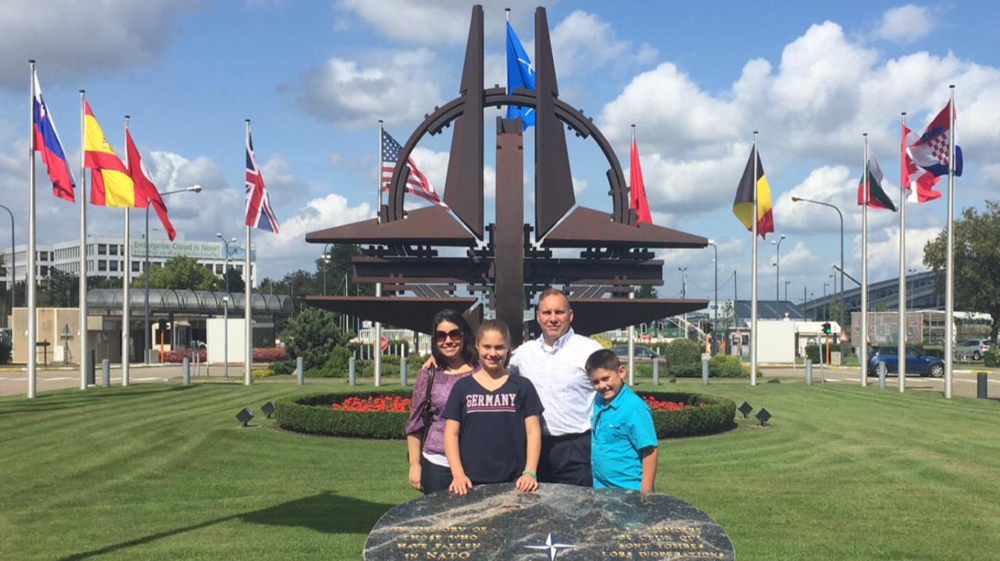

Meet Adriana
Early Life
At a young age, I was instilled with values of truth, honesty, principle, and integrity. My father, a judge, exemplified these qualities by never compromising for personal gain. He upheld principles and integrity in serving 'We the People' in Ecuador. Following my parents' divorce, my mother brought my sisters and I to America, where much of our family had already settled. I witnessed my mother face challenges, from learning English to supporting us as a single parent. Despite the difficulties, she persevered, teaching us to never give up.
Married Life, Army Wife
I met my husband in my second year of college and we married a year later after he enlisted in the military. The financial struggles we encountered during those first years were quite challenging in Killeen, Texas, but we overcame by staying focused and working hard. At our second duty station, I completed my bachelor’s degree double majoring in Finance and Economics at SUNY Oswego with high honors (Summa Cum Laude) while my husband became a Commissioned Officer through Officer Candidate School.
It became clear to me that my dream to work on Wall Street as a Certified Financial Analyst would have to be put on hold due to our remote location and my husband's long-term obligations. With student loans to repay, I decided to apply as a substitute teacher. Surprisingly, I was presented with a special chance to teach Spanish at the nearby middle school under a critical needs certificate. While the hours and pay of a teacher may not be remarkable, the satisfaction of witnessing students actively participating, learning, and developing brought me immense happiness.

Deployments and Children
Deployments can be unexpectedly challenging, and I encountered them two months after our daughter's birth when my husband was deployed to Iraq. This scenario repeated when our son turned one and on several occasions afterward. The support from the military community, neighbors, and church was invaluable in maintaining a sense of normalcy during my spouse's absence. However, attending numerous funerals on behalf of my husband at Fort Carson was an experience that deeply impacted me. It highlighted the selfless sacrifices made by our courageous servicemen and women in defense of our nation. Freedom is not free.
Battle with Lyme Disease
For years, I battled health issues that led to rheumatoid arthritis, causing severe joint pain. Simple tasks like using stairs became difficult. Visits to the Emergency Room were frequent due to numbness in my left arm and frequent heart palpitations. It was only after consulting a microbiologist that I discovered I had two strains of Lyme disease. Through the use of conventional medicine, and alternative treatments, I was able to recover. These challenging years taught me to rely on my faith, trust God, and find contentment in life's blessings.

Overseas Assignments
The two consecutive assignments in Europe provided my family with the opportunity to explore various countries and gain a deeper understanding of the liberties that we may overlook in America. Educating our children through homeschooling during those formative years exposed them to the negative impacts of communism. They grasped the significance of the quote by George Santayana, "those who cannot remember the past are condemned to repeat it." Our visits to numerous cemeteries allowed us to witness the countless gravestones honoring the sacrifices of our courageous men and women who fought for the freedoms we cherish today. We take great pride in being Americans.
Back to the Centennial State
How did Colorado become so expensive since we were last here? Feeling inspired to take action, I made a conscious effort to engage with the Republican Party members. As I delved deeper, I gained insights into the challenges facing our county and state. Encouraged to run for the position of county party secretary, I took on the role. Serving as secretary has allowed me to collaborate with dedicated volunteers and connect with numerous individuals across El Paso County. For the past three years, I have been actively walking and engaging with my district, attentively listening to the concerns of the people. I am running for Senate to be the voice you deserve in Denver, representing you with honesty, transparency, and values that resonate with yours.